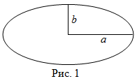

Эллипс - геометрическое место точек, сумма расстояний, от которых до двух заданных точек F1, F2, есть величина постоянная, большая, чем F1F2. Точки F1 и F2 называются фокусами эллипса. Окружность является частным случаем эллипса.
Площадь геометрической фигуры - часть поверхности, ограниченная замкнутым контуром данной фигуры. Величина площади эллипса выражается числом заключающихся в него квадратных единиц.

Площадь эллипса равна произведению длин большой и малой полуосей эллипса на число пи (3.1415).
- S - площадь эллипса
- π - число пи (3.1415)
- a - длина большой полуоси
- b - длина малой полуоси